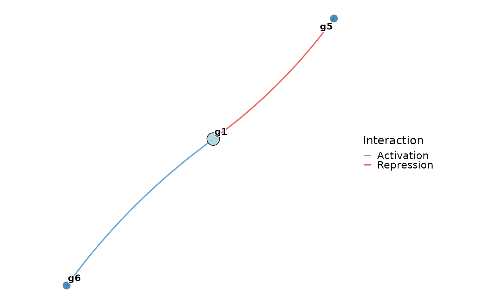
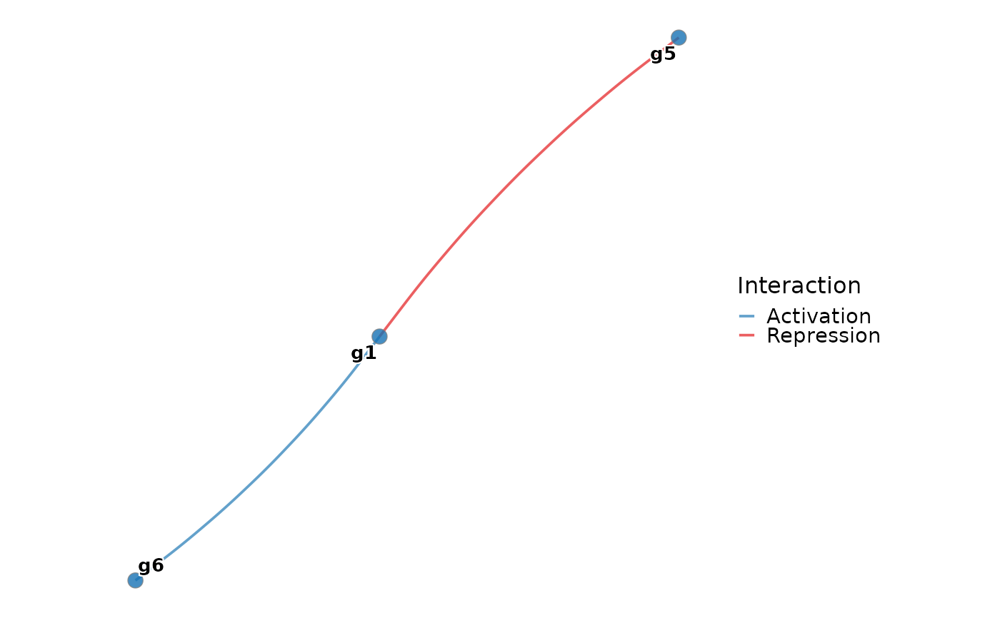
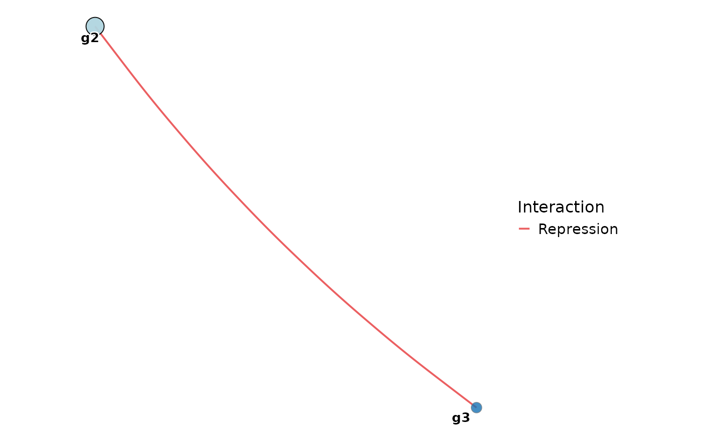

Plot static networks
Usage
plot_static_networks(
network_table,
regulators = NULL,
targets = NULL,
legend_position = "right",
theme_use = c("theme_this", "theme_blank", "theme_void"),
cols = NULL,
palette = "Chinese",
palcolor = NULL,
aspect.ratio = 1,
label.size = 3.5,
label.fg = "black",
label.bg = "white",
label.bg.r = 0.12,
tf_nodes = NULL,
node_state = NULL,
state_colors = NULL,
node_size = NULL,
label_nodes = NULL,
seed = NULL,
edge_alpha = 0.7
)Arguments
- network_table
The weight data table of network.
- regulators
A character vector of regulators to include.
- targets
A character vector of targets to include.
- legend_position
The position of legend. Default is
"right".- theme_use
Theme function name or choice:
"theme_this","theme_blank", or"theme_void". Default is"theme_this".- cols
Optional named color vector for Interaction (
ActivationandRepression). Default isc("Activation" = "#1F78B4", "Repression" = "#E31A1C").- palette
Palette name used by
thisplot::palette_colors(). Default is"Chinese".- palcolor
Optional named color vector overriding default node colors.
- aspect.ratio
Aspect ratio of panel. Default is
1.- label.size
Label text size. Default is
3.5.- label.fg
Label foreground text color. Default is
"black".- label.bg
Label outline/background color. Default is
"white".- label.bg.r
Label outline radius. Default is
0.12.- tf_nodes
Optional character vector of focal TF nodes. When supplied, these nodes are drawn as diamonds and other nodes as circles.
- node_state
Optional node-state mapping. Supply either a named character vector or a data.frame with columns
nameandstate.- state_colors
Optional named vector of colors for
node_state.- node_size
Optional named numeric vector of node sizes.
- label_nodes
Optional character vector of nodes to label. Default labels all nodes.
- seed
Optional integer seed for the force-directed layout.
- edge_alpha
Edge alpha. Default is
0.7.
Examples
data(example_matrix, package = "inferCSN")
network_table <- inferCSN::inferCSN(example_matrix)
#> ℹ [2026-10-07 06:04:56] Inferring network for <matrix/array>...
#> ✔ [2026-10-07 06:04:56] Inferring network done
#> ℹ [2026-10-07 06:04:56] Network information:
#> ℹ Edges Regulators Targets
#> ℹ 1 12 6 6
plot_static_networks(
network_table,
regulators = "g1"
)

plot_static_networks(
network_table,
targets = "g1"
)

plot_static_networks(
network_table,
regulators = "g2",
targets = "g3"
)
